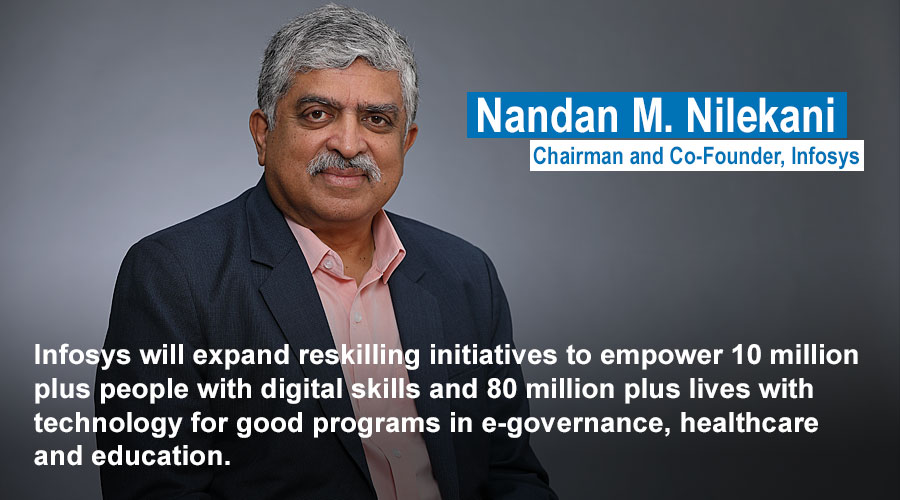
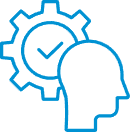
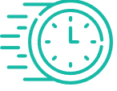
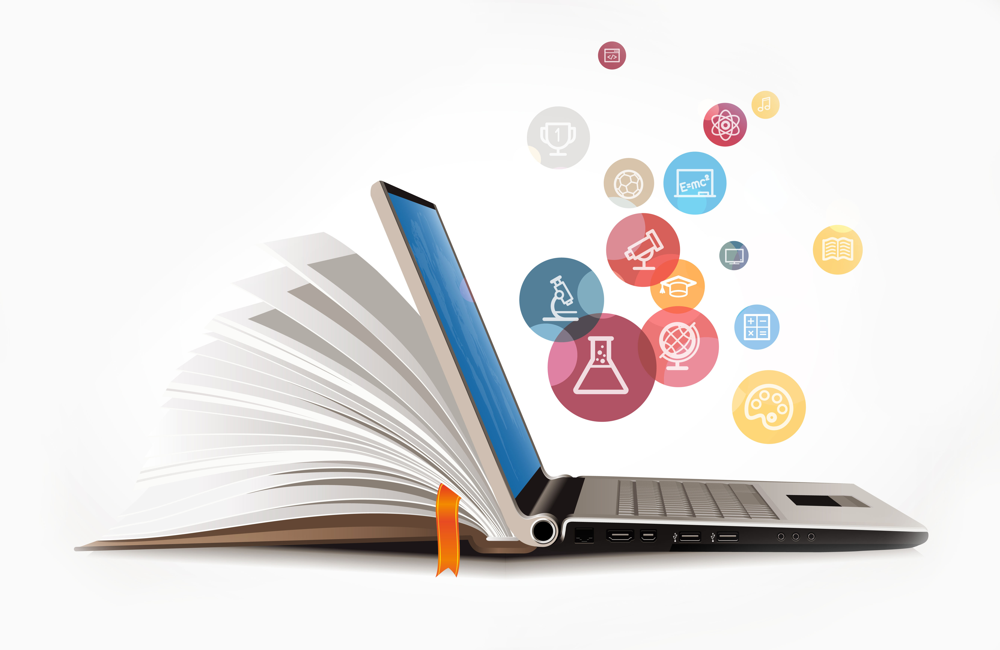
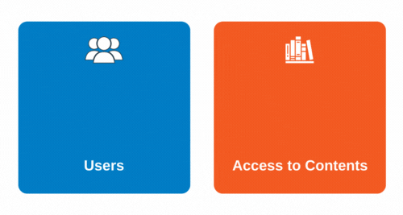

The future of India will be shaped by today's younger generation who need quality education through digital literacy, making them productive and self-reliant citizens.'Digital literacy' is the skills required to achieve to achieve digital competence and use of Information and Communication Technology (ICT) for work,leisure,learning and communication.It does not replace traditional forms of literacy,instead complements and amplifies the skills that form the foundation of traditional forms.


Core Skills
Digital Skills
Life Skills
Behavioral Skills

Life Long Learning
Continuous Education
About Infosys Springboard
Infosys Springboard is a Digital literacy program launched as part of infosys ESG Tech for Good charter. It to enable students and associted communities from early education to lifelong learners by imparting ditial and life skills through curated content & interventions, free of cost.
Why Digital literacy
Learners can benefit from the knowledgebase and experience of 4 decades of Infosys as an enterprise.We also bring the quality contents from our partners and leading universities across the world. Content is aligned with new Education policy 2020. Includes soft skills and vocational skills.

Our Focus Areas & Skills
"Digital literacy" is the skills required to achieve digital competence and the confident and critical use of ICT for work,leisure,learning and communication.
